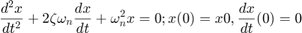

Transient Behavior and Location of Characteristic Roots in the Complex Plane
Error using evalin Undefined function or variable 'mass'.
Contents
Initial Value Problem
Consider the system described by the following second-order, ordinary differential equation and associated initial conditions:

We would like to examine the behavior of the free response of the system as the damping ratio changes. This will be done first by solving the initial value problem for various damping ratios and plotting the results. Then, we will explore changes in the damping ratio affect the characteristic roots. (Recall that the characteristic roots dictate the free-response behavior.)
Set physical and derived parameters.
To enable numerical solution of the differential equation, we will set specific values for the mass and (linear) spring rate. We will then use these to derive the (circular) natural frequency.
param.m = 1; % Mass [kg] param.k = 1; % Spring rate [N/m] param.wn = sqrt(param.k/param.m); % (Circular) natural frequency [rad/s]
Set initial conditions.
To solve our 2nd order differential equation, we need two initial conditions: one on position, the other on velocity. Moreover, recall from the accompanying PowerPoint slides that we have represented our 2nd order linear ODE into a system of 1st order ODE's amenable to solution using MATLAB. Having defined position and velocity as our system states, we must define an initial state vector.
x0 = 1; % Position [m] x0_dot = 0; % Velocity [m/s] z0 = [x0 ; x0_dot]; % Initial condition on state vector
Set simulation parameters.
We will define the duration of our simulation to be approximately 4 periods. To accommodate changes in physical parameters, we will parameterize the duration by the natural frequency. We then define the associated time step and vector of simulation time. Note that the time step dt serves to define the times at which output will be provided, not the solver time step.
tend = 4*round((2*pi)/param.wn); % Simulate for approximately 4 periods [s] dt = round((2*pi)/param.wn)/1000; % Time step [s] tsim = 0:dt:tend; % Vector of simulation times [s]
Undamped system.
We first consider an undamped system, characterized by a damping ratio of zero. Physically, this represents a system with zero dissipation of energy. We will plot the free response to confirm the expected behavior.
To solve the system of 1st order ODE's, we will use the baseline ode45 solver. The solver requires a vector of state derivatives; in this case, we call upon a function to define them.
param.zeta = 0; % Damping ratio [t,z] = ode45(@(t,z) odesys( t,z,param ),tsim,z0); x(:,1) = z(:,1); % Save solution for future plotting. plot(t,x(:,1),'linewidth',2);grid on;hold all ylim([-1 1]) xlabel('Time [s]'); ylabel('Position [m]') title('Free Response: Undamped 2nd Order System');
Consider several damping ratios.
Now we will consider four distinct values of the damping ratio corresponding to four distinct types of system behavior: undamped, underdamped, critically damped, and overdamped. These terms refer to the behavior of the system as it returns to its equilibrium state. We will plot and compare the free responses for these cases.
zetavals = [0 1/sqrt(2) 1 1.5]; % Damping ratios to consider. case1 = 'Undamped: zeta = 0' ; case2 = 'Underdamped: zeta = 0.707' ; case3 = 'Critically Damped: zeta = 1' ; case4 = 'Overdamped: zeta = 1.5' ; for i = 2: length(zetavals) param.zeta = zetavals(i); % Set current damping ratio. [t,z] = ode45(@(t,z) odesys( t,z,param ),tsim,z0); % Compute free response. x(:,i) = z(:,1); % Save solution for future plotting. end; figure % Plot results plot(t,x,'linewidth',2);grid on xlabel('Time [s]'); ylabel('Position [m]') title('Free Response of 2nd Order System for Various Damping Ratios'); legend(case1,case2,case3,case4,0)
Track characteristic roots as damping ratio increases.
Recalling that the free response of a system is governed by its characteristic roots, we will examine the changes in these roots as the damping ratio changes over a more finely spaced set of values. Since the roots may have real and imaginary parts, we will plot them in the complex plane. For each value of the damping ratio, we will compute the characteristic roots as the eigenvalues of the associated state matrix.
zeta_range = 0:0.01:1.5; % Damping ratio: undamped to overdamped. S = zeros(2,length(zeta_range)); % Initialize characteristic roots array. for i = 1:length(zeta_range) S(:,i) = eig([0 1; -param.wn^2 -2*zeta_range(i)*param.wn]); % Characteristic roots. end; figure % Plot characteristic roots in complex plane. plot(S,'bx','linewidth',2,'markersize',5); grid on; set(gca,'YAxisLocation','right') xlabel('Real Axis','Position',[-1.5 -0.1 1]) ylabel('Imaginary Axis') title('Loci of Characteristic Roots in Complex Plane for Various Damping Ratios')
Show the "odesys" function.
Here we record the function used to define the state matrix corresponding to our system of ordinary differential equations.
type odesys.m